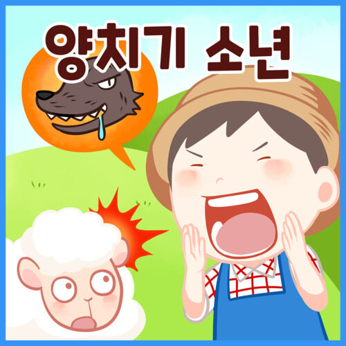

각색판
- 1. 양치기 소년의 이야기는 여러 매체에서 패러디되었으며, 늑대가 나타나서 양들을 잡아먹다가 마을 사람들이 올 때쯤 달아나서 양치기 소년이 졸지에 거짓말쟁이가 되어 얻어맞고는 비뚤어졌다는 패러디도 있다. 판본에 따라서는 마을 사람들이 다시 왔지만 늑대를 막질 못해서 양치기 소년의 양들만 죄다 몰살당하거나 흔히 양치기 소년까지 늑대에게 잡아먹히는 극단적인 경우도 있다.
- 2. 마인크래프트 버전에선 흔히 늑대가 아닌 크리퍼가 나타났다고 한 버전도 있다. 그리고 결말은 양들이 폭사하는 걸로 끝.
- 3. '양치기 소년'은 거짓말쟁이의 대명사로 여겨지고 있기 때문에 자의든 타의든 약속을 지키지 못하는 사람들에게 양치기 소년이라는 호칭이 붙고는 한다. 일례로 해마다 수능이 끝난 뒤에 한국교육과정평가원은 양치기 소년으로 전직하는데, 이는 평가원이 공언한 수능 난이도를 제대로 맞추지 못하기 때문이다. 2011 수능 당시에는 원장이 직접 '양치기소년'이라는 용어를 사용했다. "수능 문제에 좀 더 잘 접근할 수 있는 이런 식으로 가는 방안을 찾고자 합니다. 내년 3월달에 말씀드릴 때는 양치기 소.. 소년이 되지 않도록 하겠습니다."
- 4. 가끔 '늑대소년'으로 불리며, 이 쪽은 다소 일본판 판본의 영향이 있다. 일본에서 불리는 제목 가운데 "オオカミ少年"이 있기 때문. 일본 출판물들을 지나치게 직역한 때에 자주 보이는 표현이다.
- 어느 각색에서는 양치기 소년이 이 거짓말로 마을사람들이 얼마나 빠르게 오는지를 테스트하는 5대기 같은 훈련을 했고 실제로 늑대가 나타나고 외치자 엄청난 속도로 모인 마을 사람들에게 늑대는 복날 개 패듯이 두들겨 맞고 골로 간다는 이야기도 있다.
- 한국의 극작가 이강백의 희곡인 파수꾼은 이 우화를 모티브로 한 희곡이다. 다만 거짓말의 주체가 소년 파수꾼인 '다'가 아닌 마을의 촌장이고, 이리 떼는 실존하지 않는 위협으로 1970년대 당시 권위주의 정권의 국민 세뇌를 풍자한 것이 이 우화와의 큰 차이라고 할 수 있다.
